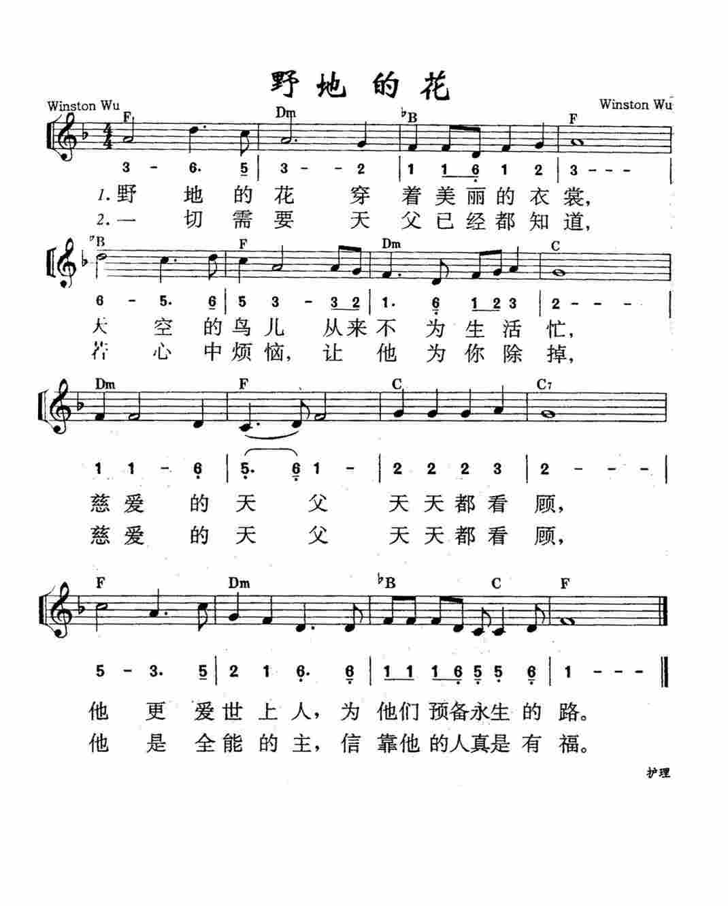

|
|
【野地的花】[國語] |
|
|
野地的花，穿著美麗的衣裳， |
|
http://www.sooopu.com/html/193/193176.html
 |
|
|
|
|
野地的花，穿著美麗的衣裳，
天空的鳥兒，從來不為生活忙；
慈愛的天父，天天都看顧，
祂更愛世上人，為他們預備永生的路。
一切需要，天父已經都知道，
若心中煩惱， 讓祂為你除掉；
慈愛的天父，天天都看顧，
祂是全能的主，信靠祂的人真是有福.
點耳機收聽)
從一首詩歌中，可以看見一個世界。 「野地的花」所呈現的，是一個安詳、溫馨、有愛的天父世界。
本詩歌是依據馬太福音6:26-32「你們看那天上的飛鳥，也不種，也不收，也不積蓄在倉裡，你們的天父尚且養活它．你們不比飛鳥貴重得多麼。…….何必為衣裳憂慮呢．你想野地裡的百合花，怎麼長起來，它也不勞苦，也不紡線．.然而我告訴你們，就是所羅門極榮華的時候，他所穿戴的，還不如這花一朵呢。…….野地裡的草，今天還在，明天就丟在爐裡，神還給它這樣的妝飾，何況你們呢。
所以不要憂慮，說，喫甚麼，喝甚麼，穿甚麼。…….你們需用的這一切東西，你們的天父是知道的。」
作者葉薇心姐妹（Linda Yeh，1951- ）原藉中國福州，生於台灣台北。 中學時在同學帶領下，接受耶穌基督為救主。
自台灣大學中文系畢業後，即加入救世傳播協會之天韻歌聲詩班。
在神引領下，信仰由隨意而變得認真，對神的認識由形式而深入心靈；生活中點點滴滴的體驗，漸漸化成了一首首的歌詞，歷年來，其創作已逾一百五十首。
「野地的花」可說是華人教會中流傳最廣、最受喜愛的詩歌之一，從中國大陸的地下教會、到旅居海外的留學生團契，都經常聽到這首以上帝的愛撫慰人們心靈之歌。
本詩歌詞饒富文學性，淺顯中帶出深刻的信仰真諦，孩童成人均容易瑯瑯上口，且旋律平易近人，該曲由吳文棟弟兄譜作。
七十年代，台灣教會的詩歌大多譯自國外，相對的，台灣的歌壇卻颳起了一陣民歌風。 校園民歌取代了當時的流行歌曲，蔚為歌壇的清流。
一日，天韻詩班赴台中演唱，團員們在街上，聽到商店�堣�斷地播放民歌，一首又一首。
因此有人思索「教會的詩歌，如何能走出教會的圍牆？」「聖詩可不可以更接近人群？」「為什麼我們不自己寫歌呢？」就在這樣的理念下，天韻的團員開始嚐試創作，以中國本色的曲調，配合淺顯易懂的歌詞；有時摘引聖經經文，有時嚐試福音性的詞作。不久，天韻第一張創作「野地的花」專輯推出，當時即刻受到許多的共鳴和回應，直接奠定了天韻創作的基礎。
中英文聖詩集參考
英文歌名 Flowers
of the Field
天韻歌選
http://www.hymncompanions.org/Mar/29/stream.php
1979年基督教救世傳播協會天韻出版社推出的第一張創作專輯《野地的花》，專輯中大多數的歌曲都是由吳文棟作曲、葉薇心作詞的福音詩歌。1970年代後期的台灣樂界正是「唱自己的歌」校園民歌運動風起雲湧之時，而那時台灣教會的詩歌大多譯自國外。一日，「天韻」詩班(合唱團)赴台中演唱，團員們在街上，聽到商店�堣�斷地播放民歌，一首又一首。因此有人思疑「教會的詩歌，如何能走出教會的圍牆？」「聖詩可不可以更接近人群？」「為什麼我們不自己寫歌呢？」就在這樣的理念下，天韻的團員開始嚐試創作，以本土的曲調，配合淺顯易懂的歌詞，有時摘編聖經經文，有時嚐試福音的詞作。不久，天韻第一張創作《野地的花》專輯推出，當時即刻受到許多的共鳴和回應，直接奠定了天韻創作的基礎。天韻詩班自那時開始嚐試新歌寫作，延續了自周裕豐牧師創作詩歌之後，以本土福音詩歌傳達信仰的真意。當我們回顧檢視「唱自己的歌」的脈絡之時，別忘了在李雙澤、楊弦、胡德夫楊祖珺之外，在福音詩歌裡也有一群人為了「唱自己的歌」，默默地創作，是該還給他(她)們應得的肯定了。
《野地的花》專輯裡有經文改寫的詩歌：如〈野地的花〉、〈義人的路〉；也有生活見證的詩歌：〈主愛滋潤我心〉、〈自從我認識耶穌〉。其中〈野地的花〉這首流行福音詩歌的先鋒，是葉薇心31年前的作品，如今仍在教會頌唱。葉薇心表示，創作的靈感無處不在，因為上帝創造的天地萬物實在是太豐富了！〈野地的花〉所呈現的，是一個安詳、溫馨、有愛的天父世界。詩歌改寫自馬太福音6:26-32：
「你們看那天上的飛鳥，也不種，也不收，也不積蓄在倉裡，你們的天父尚且養活它。你們不比飛鳥貴重得多麼。…何必為衣裳憂慮呢。你想野地裡的百合花，怎麼長起來，他也不勞苦，也不紡線；然而我告訴你們，就是所羅門極榮華的時候，他所穿戴的，還不如這花一朵呢。…野地裡的草，今天還在，明天就丟在爐裡，神還給他這樣的妝飾，何況你們呢。所以不要憂慮，說，喫甚麼，喝甚麼，穿甚麼。…你們需用的這一切東西，你們的天父是知道的。」
〈野地的花〉作詞者葉薇心姐妹1951年生於台灣台北，祖籍福州。中學時在同學帶領下，接受耶穌基督為救主。
她自台灣大學中文系畢業後，即加入救世傳播協會創辦人彭蒙惠於1963年成立的天韻詩班(合唱團)。就因為上台視作節目，所以取名叫「天韻歌聲」。葉薇心身為天韻團隊資深製作人，她說：「天韻是有異象的，她用大眾傳播的方式，藉音樂與教會連結，攜手把福音傳出去。」在
神引領下，信仰由隨意而變得認真，對神的認識由形式而深入心靈；生活中點點滴滴的體驗，漸漸化成了一首首的歌詞。1992年，她以〈別讓地球再流淚〉一曲，榮獲第三屆「金曲獎」最佳國語作詞人獎的肯定。歷年來，其創作已逾一百五十首。2001年，葉薇心從天韻的隊伍中退下，走向幕後，迎接新的任務與挑戰。
至於〈野地的花〉作曲者吳文棟，從小就對音樂就超有感覺，在刻苦環境中努力學習音樂。音樂人吳文棟在離開天韻團隊後，曾經擔任過奇美曼陀林樂團指揮，目前從事小提琴教學工作。今年吳文棟受法務部台中戒治所委託，教授受戒治人小提琴，期待以弓弦取代針筒，藉由音符所展現的躍動生命力，穿透監所高牆，以心靈教化方式幫助受戒治人遠離煙毒。這也許是神要他在野地裡盛開出百合花吧！
https://django1105.pixnet.net/blog/post/242425250
葉薇心•人生充滿喜樂的種子
資深作詞人葉薇心寫過許多膾炙人口的詩歌，激勵了許多人，上帝透過聽眾讓她得到肯定。27年過去了，葉薇心離開亮麗的舞台，在主的帶領下，體悟台下的生命更為重要的道理，她把上帝放在生命中的第一位，讓更多的人被上帝的愛觸摸。
文／尹康寓 攝影／何維綱
葉薇心，台灣知名天韻合唱團的資深作詞人，寫過〈野地的花〉、〈我最愛的一本書〉等多首優美又近人的詩歌，曾獲得金曲獎最佳作詞人的殊榮。她筆下二百多首的詩歌，多是她在生活中的體驗，透過與神之間的關係，結合自己的信仰經歷，將領受到的智慧消化為文字傳達給世人。葉薇心回首，十八歲那年決定將自己的人生主權交付給主，為後續的生命埋下了一顆喜樂的種子。
安然的為主敞開心門
雖然葉薇心決定追隨主，但她內心害怕以過度狂熱的方式奉獻給主。她在台大中文系還沒畢業前，因緣際會進入了救世傳播協會，自以為在這多元的工作環境，只為廣播節目撰寫文稿，既不容易有狂熱的傾向，又可以順便服侍上帝，但卻意外的與天韻合唱團拉起紅線，開啟了接續二十多年的創作之路，並隨著天韻到訪世界各地，為全球的華人傳播福音。
期間她曾經覺得不務正業而想轉換跑道，但卻在主的帶領下，一步一步的放下原有的想法，安然的為主敞開心門。藉由閱讀聖經，葉薇心認識了生命，活出了智慧，常在心中產生困惑時，發現主適時的透過文字給予她答案。她說：「上帝要我們透過與祂的關係來展現喜樂，祂在你的生命中安排了一個計畫，活出那個計畫是最開心的事情」。
忘記背後 努力面前
葉薇心分享：「當我真的明白我是上帝所造的，我便與萬物同在，與上帝所創造的萬物同在，心裡有說不出的喜悅，是這麼樣的美好，這麼樣的安定。因為我知道我和上帝的關係──知道我從哪裡來，要往哪裡去，知道當下該做些什麼，也知道我終將歸屬於上帝，內心無所畏懼。」聖經教導葉薇心，看到自己的界限，承認自己的軟弱，知道自己該謹守分寸，在有限的空間內發揮創意。
她發現真正的喜悅來自於正確的優先順序，當她捨棄自我，背起自己的十字架，將自己排在上帝與他人之後，她感到快樂與滿足。不再以自我為中心，不再本末倒置，不再急著出頭來證明存在，有了開闊的心胸，得到內在的平靜。葉薇心領受到人世間的成就、金錢與光環，不是永遠存在的，一但舞台消失了，我們常處於不知道該如何面對的無助，然而這樣的無助，是上帝給予我們的智慧──要忘記背後，努力面前。
信仰是最大的財富
二○○一年葉薇心選擇離開亮麗的舞台。融入天韻二十七年，她一直認為她就是天韻，天韻就是她，無法想像離開後的生活。離開了天韻，她體會到：沒有永遠的事，所有的事情都會成為過去，必須忘記背後，專注在現在，然而每個現在做的事情，可以存到永遠，留下永恆的印記。現在她成為一個協助別人的支援者，她帶領查經班，分享她的經文體驗與信仰經歷，希望更多人因此認識上帝；她也負責培訓天韻的新生團隊，帶著他們走訪校園。過去，她曾經是矚目的焦點，現在雖然卸下光環，但她知道自己的賞賜在上帝那裡，心中沒有遺憾。
創作詩歌時，葉薇心從未想過這些歌曲會激勵到哪些人，上帝透過聽眾來讓她得到肯定，但她認為這並不是唯一肯定自我價值的方式，她從上帝的引導下領悟，台下的生命比台上有沒有沒完美的呈現更為重要，她開始關心身邊的人是否得到幫助，是否被上帝的愛觸摸，她把上帝放在生命中的第一位，她確定這就是她最大的財富，也是她最大的價值和意義。
https://edenswfmp.pixnet.net/blog/post/140272088